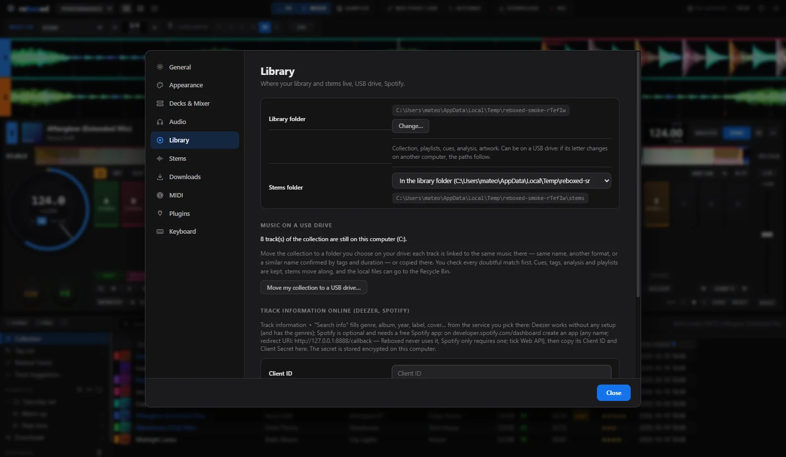

💿Jogs
Scratch, pitch bend, vinyl mode.
🟦Pads
Hot cues, beat loop, beat jump, slicer, sampler, key shift, stems.
🎚️Mixer & FX
Faders, EQ, crossfader, Beat FX et Color FX.
💡LED
Les pads et boutons s'allument comme dans rekordbox.
🎧Carte son
La carte son du contrôleur est choisie au branchement : master et casque.
🔌Branche et joue
Reconnu tout seul, sans réglage. Sinon : MIDI learn et clavier.
CDJ / XDJ
Une clé prête pour le club
- Base export.pdb, grilles, hot cues colorées, memory cues, boucles, formes d'onde.
- Réglages des lecteurs et de la table (My Settings).
- Toute la collection ou seulement des playlists. Un export existant est sauvegardé.
Vérifié avec des lecteurs indépendants du format, pas encore sur un vrai lecteur Pioneer.

Clé USB
Ta bibliothèque sur une clé
- La bibliothèque entière peut vivre sur une clé ; les chemins suivent si la lettre change.
- Un outil y déplace toute ta collection, en retrouvant les mêmes morceaux.
